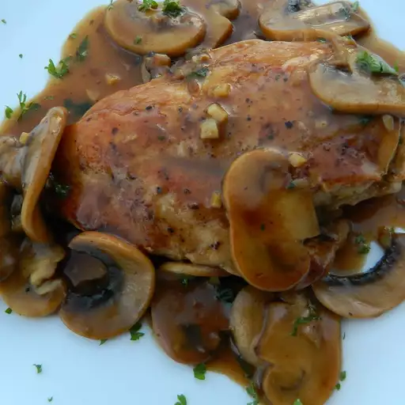

Home
Chicken Marsala

Description
Certain dishes have a special place in my heart and this is one of them.
The first real restaurant job I had in San Francisco was at a small place
called Ryan's Cafe. It was run by a husband and wife team, Michael and Lenore Ryan.
They were true 'foodies' before that term had even been coined. This chicken Marsala
dish was the most popular dish on the menu and the first one that I was taught.
Ingredients
- 2 skin-on, boneless chicken breast halves
- 1 teaspoon salt and ground black pepper to taste
- 3 tablespoons butter, divided
- 2 tablespoons olive oil
- 5 white mushrooms, sliced
- 1 shallot, minced
- 1 tablespoon all-purpose flour
- 1 cup Marsala wine
- 2 cups chicken stock
- 2 tablespoons chopped fresh parsley
- 1 teaspoon cold butter
Steps
- Season chicken breasts all over with salt and pepper.
- Melt 1 1/2 tablespoons butter and olive oil in a skillet over medium heat.
Cook chicken breasts, skin-side down, in hot butter and oil until browned, about 5 minutes.
Flip and cook until breasts are almost cooked through, about 5 minutes more. Transfer chicken breasts to a plate.
- Melt 1 1/2 tablespoons butter in the same skillet over medium-high heat.
Saute mushrooms with a pinch of salt and a pinch of pepper in hot butter until mushrooms are golden, 5 to 7 minutes.
Add minced shallot; cook and stir until softened, 2 to 3 minutes. Sprinkle flour over the top and cook and stir until
the bitterness of the flour cooks off, 3 to 4 minutes.
- Pour wine into skillet and bring to a boil; cook and stir until wine reduces and sauce thickens, 3 to 4 minutes.
Add chicken stock; bring to a simmer and cook until slightly reduced, 3 to 5 minutes more.
- Return chicken breasts to the skillet, reduce heat to low, and cook chicken, turning once, until no longer pink in the center and the juices run clear,
about 10 minutes. An instant-read thermometer inserted into the center should read at least 165 degrees F (74 degrees C). Remove from heat.
- Move chicken to one side of the skillet and tilt the skillet so that the sauce pools at the bottom. Stir parsley and 1 teaspoon cold butter into the sauce,
stirring constantly, until sauce is shiny and butter is completely melted. Transfer chicken breasts to plates and spoon mushrooms and sauce over the top.